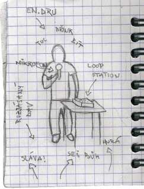
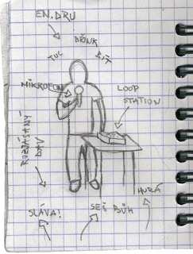

Jaroslav Dušek, Divadlo Čertovka - U Výčepu (v rámci projektu dva světy)
Nevěděl jsem co to je, šel jsem tam hlavně kvůli Duškovi. Ten tam ale skoro nehrál, jen tak přicmrdoval. Jaroslav Dušek se už delší dobu věnuje neslyšícím lidem a teď s nimi nazkoušel tohle divadelní představení, ve kterém chtěli hlavně ukázat, jak se žije neslyšícím, jaké mají problémy a jak se s nimi musí vypořádat. Hráli tu čtyři neslyšící, bavili se ve znakovém jazyce a každý z nich měl vlastního tlumočníka, který divákům sděloval, co zrovna říká. Na závěr jsme se dočkali tance a dokonce i raperského battlu v podání neslyšících. Vcelku zajímavá podívaná, škoda jen, že to bylo trochu moc naučný a lehce i agitující.
hodnocení: 6/10
Sdružení SERPENS a DAMU - O Panence a Panáčkovi
Jedno z nejlíp udělaných dětských předsavení, který jsem na festivalu viděl. U většiny z nich jsem se začal ke konci nudit, ale tohle mě fakt bavilo. Hlavně díky zajímavé stylizaci loutek, celkem vtipnému příběhu, ale především ti herci! Hráli to kluk a holka, byli to skvělí vypravěči, herci a prostě uměli celkově zaujmout.
hodnocení: 8/10
Divadlo Jesličky - soubor Po malinách - Švédský stůl
Hradecký soubor si pro diváky připravil nevídanou podívanou. Jak už název napovídá, celé představení se točilo okolo švédského stolu. Kdyby okolo, odehrávalo se přímo na něm. Herci představovali jednotlivé pokrmy a lahůdky na stole a celé se to točilo kolem strachu z toho, kdo bude další, koho lidé sní. Objevil se tu dokonce i milostný příběh mezi jednohubkou a ještě něčim. Korunu celému představení dával uzený losos a jeho suché a ironické hlášky, kterými každého uzemňoval. Ty mě bavily.
hodnocení: 7/10
čtvrtek 1. července 2010
Divadlo evropských regionů - den první - pondělí
Divadlo Bufet - Rádio Ivo
Tři herci (jestli se jim tak dá říkat) sedí u stolu s mixážními pultíky, notebookem a třemi mikrofony a rozehrávají rozhlasovou improvizaci. Prostě jen sedí, mluví a pouští k tomu patřičné ruchy jako je chůze, déšť, šum lidí v kavárně... Člověk se cítí jako kdyby poslouchal rádio, jen u toho vidí herce, jak tu rozhlasovou hru vytváří.
Příběh pro mě nebyl až tak důležitý nebo zajímavý, šlo hlavně o tu formu, při které je divák nucen zapojovat fantazii, vytvořit si vlastní podobu postav, prostředí a všeho kolem. Ve zkratce se šlo o to, že dva kamarádi (muž a žena) se v kavárně setkali s Láďou Křížkem, společně odchází a nějakou nešťastnou náhodou zůstali všichni tři uvězněni v budově, kde pracoval ten muž. Snaží se dostat ven, postupně se tam začíná trochu projevovat ponorka a tak. Nakonec se jim to nějak podaří a hra končí.
Nevím do jaké míry to byla improvizace, ale improvizovat všichni určitě umí, což předvedli při výpadku proudu, kdy se nenechali rozhodit a ve stížených podmínkách jeli dál.
Velmi zvláštní představení. Bavilo mě to, i když to nebyl žádnej zázrak.
hodnocení: 6/10
DAMU Praha - Markéta Lazarová
Nikdy jsem Markétu Lazarovou neviděl, tak jsem neváhal a šel na ni. Bylo to kvalitní představení, studenti DAMU předvedli, že jsou šikovní a talentovaní, zvlášť výkon (hlavně hlas) vypravěčky mě uchvátil.
Zajímavě měli vyřešenou i scénu. Místo klasického jeviště si přivezli šikmou plochu, která byla ale ještě různě členěná, takže každá část byla jinak šikmá. Jako povedený hodnotím i kostýmy.
hodnocení: 7/10
Tři herci (jestli se jim tak dá říkat) sedí u stolu s mixážními pultíky, notebookem a třemi mikrofony a rozehrávají rozhlasovou improvizaci. Prostě jen sedí, mluví a pouští k tomu patřičné ruchy jako je chůze, déšť, šum lidí v kavárně... Člověk se cítí jako kdyby poslouchal rádio, jen u toho vidí herce, jak tu rozhlasovou hru vytváří.
Příběh pro mě nebyl až tak důležitý nebo zajímavý, šlo hlavně o tu formu, při které je divák nucen zapojovat fantazii, vytvořit si vlastní podobu postav, prostředí a všeho kolem. Ve zkratce se šlo o to, že dva kamarádi (muž a žena) se v kavárně setkali s Láďou Křížkem, společně odchází a nějakou nešťastnou náhodou zůstali všichni tři uvězněni v budově, kde pracoval ten muž. Snaží se dostat ven, postupně se tam začíná trochu projevovat ponorka a tak. Nakonec se jim to nějak podaří a hra končí.
Nevím do jaké míry to byla improvizace, ale improvizovat všichni určitě umí, což předvedli při výpadku proudu, kdy se nenechali rozhodit a ve stížených podmínkách jeli dál.
Velmi zvláštní představení. Bavilo mě to, i když to nebyl žádnej zázrak.
hodnocení: 6/10
DAMU Praha - Markéta Lazarová
Nikdy jsem Markétu Lazarovou neviděl, tak jsem neváhal a šel na ni. Bylo to kvalitní představení, studenti DAMU předvedli, že jsou šikovní a talentovaní, zvlášť výkon (hlavně hlas) vypravěčky mě uchvátil.
Zajímavě měli vyřešenou i scénu. Místo klasického jeviště si přivezli šikmou plochu, která byla ale ještě různě členěná, takže každá část byla jinak šikmá. Jako povedený hodnotím i kostýmy.
hodnocení: 7/10
neděle 20. června 2010
Divadlo Bufet - Řídič
Řídič. Po roce jsem ho znovu viděl a úplně jsem zapomněl, jaký je to dobrý představení. Odehrává se v jejich vlastním autobuse, při nástupu diváci hlásí kam jedou a podle toho se jim určuje cena vstupného. Místo lístku dostanou šňůrku s čísílkem. Potom, co se všichni usadí, jízda začíná.
Hrajou dva kluci a jedna holka. Postupně se však příběh překlápí do různých rovin a jejich role střídají, až z toho jde hlava kolem. Chvíli jsou cestujícími a řidičem autobusu, pak zase třemi nejlepšími kamarády, dětmi ve školním věku a tak různě. Moc zajímavá podívaná promyšlená do posledního detailu.
A na co že je ta šňůrka s číslem? Jsou to místenky, takže téměř na začátku představení ta herečka nakreslí křídou na strop čísla sedadel a lidi si podle toho musí přesednout. Pořádek musí být. Autobus je vybaven audiovizuální technikou, tak je hra doprovázena například předem nahranými monology, které nám říkají, co si hlavní hrdinové právě myslí. Nakonec dojde i na videoprojekci a hromadné zouvání bot.
Kdo neviděl, o hodně přišel. Kdo má možnost to někde vidět, ať jde.
hodnocení: 9/10
http://www.divadlobufet.cz/fotogalerie/ridic/01.html
Hrajou dva kluci a jedna holka. Postupně se však příběh překlápí do různých rovin a jejich role střídají, až z toho jde hlava kolem. Chvíli jsou cestujícími a řidičem autobusu, pak zase třemi nejlepšími kamarády, dětmi ve školním věku a tak různě. Moc zajímavá podívaná promyšlená do posledního detailu.
A na co že je ta šňůrka s číslem? Jsou to místenky, takže téměř na začátku představení ta herečka nakreslí křídou na strop čísla sedadel a lidi si podle toho musí přesednout. Pořádek musí být. Autobus je vybaven audiovizuální technikou, tak je hra doprovázena například předem nahranými monology, které nám říkají, co si hlavní hrdinové právě myslí. Nakonec dojde i na videoprojekci a hromadné zouvání bot.
Kdo neviděl, o hodně přišel. Kdo má možnost to někde vidět, ať jde.
hodnocení: 9/10
http://www.divadlobufet.cz/fotogalerie/ridic/01.html
Malé divadlo kjógenu - Připoutaný k tyči
Nejnovější kjógen se drží klasického schématu, kdy pán odchází za naléhavou záležitostí a nechává své dva sluhy hlídat dům. Ti mu ovšem během jeho nepřítomnosti pokaždé upíjejí saké a tak jednomu z nich sváže ruce a druhému je přiváže k tyči.
Touha po saké je ovšem tak velká, že si poradí i přes tyto překážky začnou popíjet. Jak se dostávají do nálady, začínají zpívat japonské opilecké odrhovačky a postupně i tancovat. Ty působí zvlášť komicky, když jeden z nich tancuje s rukama svázanýma za zády a druhý na tyči. Hra končí klasicky - příchodem pána a útěkem sluhů.
Tahle hra mě bavila, byly v ní všechny klasické kjógenovské prvky, a navíc i tradiční zpěvy a tance. Navíc celá hra působila o to vtipněji, že před ní hráli ještě Lahodný jed, který má naprosto stejný koncept, takže se i opakovaly úplně stejné fráze, které říkali.
hodnocení: 7/10
http://www.mdk.webgarden.cz/
Touha po saké je ovšem tak velká, že si poradí i přes tyto překážky začnou popíjet. Jak se dostávají do nálady, začínají zpívat japonské opilecké odrhovačky a postupně i tancovat. Ty působí zvlášť komicky, když jeden z nich tancuje s rukama svázanýma za zády a druhý na tyči. Hra končí klasicky - příchodem pána a útěkem sluhů.
Tahle hra mě bavila, byly v ní všechny klasické kjógenovské prvky, a navíc i tradiční zpěvy a tance. Navíc celá hra působila o to vtipněji, že před ní hráli ještě Lahodný jed, který má naprosto stejný koncept, takže se i opakovaly úplně stejné fráze, které říkali.
hodnocení: 7/10
http://www.mdk.webgarden.cz/
neděle 6. června 2010
En.dru, aneb zpívá celá ádvojka
Na závěr jarní sezony si A2 připravila opravdovou lahůdku. Jeden obyčejnej kluk, jeden mikrofon, jedna šikovná krabička a spousta kvalitní hudby, zábavy a radosti. O to se postaral En.dru, mistr republiky a vicemistr světa v beatboxu a člen skupiny Mako!Mako.
Exceluje nejen beatboxu, ale je i hodně dobrej zpěvák, což během celýho večera dokazoval. Nepřišel totiž předvádět jen beaty, donesl si s sebou i loopstation, takovou malou krabičku, do který si něco nahraje, zmačkne čudlík a ono to nahranou část ve smyčce přehrává. Je možný nahrávat více stop, takže se s tim dají dělat docela divy.
Svoji show začal tím, že předvedl co je a jak funguje loopstation a ukázal nějaký základní triky, co se s pusou dají dělat (kopák, basa, činely...). Pak už začal do smyčkovače vrstvit různý linky a předvádět nevídaný kousky. Většinou si nahrál několika hlasy základní melodii, a do tý pak přidával nějaký další zvuky. Něco jen zpíval, něco nahrál a ve smyčce to zase pustil. Většina písniček trvala tak deset minut. Možná se zdá, že to musí bejt nuda, poslouchat takovou dobu to samý dokola, ale on s loopstation dělal hotový divy. Už jen sledovat, jak vám skladba vzniká přímo před očima je zážitek sám o sobě. Navíc i s těma nahranýma smyčkama pracoval dál, různě je vypínal a zase pouštěl a tím celou skladbu měnil a oživoval.
Že je neskutečně nadanej dokazoval nejen tím, že dokázal zpívat, držet rytmus a do toho ještě pořád štelovat nějaký čudlíky na smyčkovači (a že jich tam bylo), ale i tím, že je schopnej zahrát a zazpívat téměř cokoli. Vzal to od Michaela Jacksona, přes reggae, house, r'n'b až k hiphopu a rapu. A lidi, lidi ty z něj šíleli a on to moc dobře věděl. Dokonce zkusil, aby levá část publika zpívala jednu melodii, prostřední jinou a pravá ještě jinou. A všichni zpívali, v takový byli euforii. To jsem ještě nezažil. Diváci mu takhle zpívali takovej dobrej základ místo loopstation a on pak do toho začal dělat beatbox a zpívat. Prostě paráda!

En.dru je zkrátka borec a i když to ví, zůstává pořád pohodovym, sympatickym a možná i trochu nesmělym klukem. Začal třeba dělat jednu písničku a když měl nahranej ten základ a začal do toho vytvářet něco jinýho, tak to celý vypnul a prohlásil, že tahle se mu nelíbila a nepovedla. Což mě přivádí na to, že vlastně asi ne úplně všechno měl předem připravený a docela improvizoval. Klobouk dolů.
Po celou dobu koncertu jsem byl jak v jinym světě, s otevřenou pusou jsem sledoval, co tam ten člověk předvádí a nechával na sebe působit radost, kterou on do svý hudby dával. I když třeba hudba není úplně extra (zvládla by to kdejaká kapela), ale to, že to všechno vytváří sám, z ní dělá něco výjimečnýho. Pro mě zážitek roku.
hodnocení: 11/10
http://youtu.be/shxhCWuq2Ug
http://endru.cz
Exceluje nejen beatboxu, ale je i hodně dobrej zpěvák, což během celýho večera dokazoval. Nepřišel totiž předvádět jen beaty, donesl si s sebou i loopstation, takovou malou krabičku, do který si něco nahraje, zmačkne čudlík a ono to nahranou část ve smyčce přehrává. Je možný nahrávat více stop, takže se s tim dají dělat docela divy.
Svoji show začal tím, že předvedl co je a jak funguje loopstation a ukázal nějaký základní triky, co se s pusou dají dělat (kopák, basa, činely...). Pak už začal do smyčkovače vrstvit různý linky a předvádět nevídaný kousky. Většinou si nahrál několika hlasy základní melodii, a do tý pak přidával nějaký další zvuky. Něco jen zpíval, něco nahrál a ve smyčce to zase pustil. Většina písniček trvala tak deset minut. Možná se zdá, že to musí bejt nuda, poslouchat takovou dobu to samý dokola, ale on s loopstation dělal hotový divy. Už jen sledovat, jak vám skladba vzniká přímo před očima je zážitek sám o sobě. Navíc i s těma nahranýma smyčkama pracoval dál, různě je vypínal a zase pouštěl a tím celou skladbu měnil a oživoval.
Že je neskutečně nadanej dokazoval nejen tím, že dokázal zpívat, držet rytmus a do toho ještě pořád štelovat nějaký čudlíky na smyčkovači (a že jich tam bylo), ale i tím, že je schopnej zahrát a zazpívat téměř cokoli. Vzal to od Michaela Jacksona, přes reggae, house, r'n'b až k hiphopu a rapu. A lidi, lidi ty z něj šíleli a on to moc dobře věděl. Dokonce zkusil, aby levá část publika zpívala jednu melodii, prostřední jinou a pravá ještě jinou. A všichni zpívali, v takový byli euforii. To jsem ještě nezažil. Diváci mu takhle zpívali takovej dobrej základ místo loopstation a on pak do toho začal dělat beatbox a zpívat. Prostě paráda!

{kind=link}
En.dru je zkrátka borec a i když to ví, zůstává pořád pohodovym, sympatickym a možná i trochu nesmělym klukem. Začal třeba dělat jednu písničku a když měl nahranej ten základ a začal do toho vytvářet něco jinýho, tak to celý vypnul a prohlásil, že tahle se mu nelíbila a nepovedla. Což mě přivádí na to, že vlastně asi ne úplně všechno měl předem připravený a docela improvizoval. Klobouk dolů.
Po celou dobu koncertu jsem byl jak v jinym světě, s otevřenou pusou jsem sledoval, co tam ten člověk předvádí a nechával na sebe působit radost, kterou on do svý hudby dával. I když třeba hudba není úplně extra (zvládla by to kdejaká kapela), ale to, že to všechno vytváří sám, z ní dělá něco výjimečnýho. Pro mě zážitek roku.
hodnocení: 11/10
http://youtu.be/shxhCWuq2Ug
http://endru.cz
sobota 5. června 2010
Fantastický pan Lišák
Filmy sem moc nedávám, protože o těch se píše všude až až a nechci nosit dříví do lesa. Jenže tenhle film mi přijde trochu opomíjený (na to, že to je docela slušná podívaná), tak o něm něco málo napíšu.
K tvorbě tohoto rodinného filmu byla použita klasická loutková animace, což v době dokonalé počítačové 3D animace může potěšit oko nejednoho diváka (minimálně mé). Animace není nikterak vypiplaná a promakaná, je to celý takový hrubý a syrový, občas to na mě působí trochu úsečně, že autoři nedávají divákovi moc prostoru, aby si tu animaci vychutnal, nicméně celkový dojem z výtvarného zpracování je velmi dobrý. Tvůrci hýří nápady, fintami a zajímavými záběry (spousta průřezových záběrů na to, jak si hrabou cestičky pod zemí a hlavně finální honička z first-person pohledu, jes!).
Co se děje týká, není to žádná hitparáda. Nečekejte duchaplný nebo hlubokomyslný příběh. Jde o to, že pan Lišák kdysi slíbil své ženě, že už nebude krást, ale po letech se v něm opět probouzí liščí pudy, tak se vydává vyloupit tři největší farmáře v okolí. Ti na to samozřejmě přijdou a vypukne hon na lišku. Chvíli to vypadá, že už mají vyhráno, pak ale pan Lišák vymyslí nějakou lest a vše je naopak. Takto se síly několikrát přelijí až nakonec... no však to znáte, happy end a doják největší. To celé je okořeněno spoustou vtipných, nebo aspoň úsměvných situací.
Film je hlasově velmi dobře obsazen, kladné postavy mluví George Clooney a Meryl Streep. V reálu jsou cizí, ale tady dělají, že jsou příbuzní. Zvlášť Clooneymu role vyloženě sedla a dodává lišákovi obrovské charisma. Na začátku, kdy lišák plánuje provedení jednotlivých loupeží jsem si připadal jak v animovaných Dannyho parťácích. Korunu tomu všemu nasazuje povedený a tak trochu "forrestgumpovský" soundtrack, kde zazní různé žánry od tanga, přes country, až po rock v podání Rolling Stones.
Kdybych to měl shrnout, tak tenhle film má spád, nejsou tam žádná hluchá místa a na diváka se stále valí další akce. Ta hodina dvacet uteče jako voda a je to taková dobrá oddychovka.
hodnocení: 8/10
http://www.csfd.cz/film/233867-fantasticky-pan-lisak/
K tvorbě tohoto rodinného filmu byla použita klasická loutková animace, což v době dokonalé počítačové 3D animace může potěšit oko nejednoho diváka (minimálně mé). Animace není nikterak vypiplaná a promakaná, je to celý takový hrubý a syrový, občas to na mě působí trochu úsečně, že autoři nedávají divákovi moc prostoru, aby si tu animaci vychutnal, nicméně celkový dojem z výtvarného zpracování je velmi dobrý. Tvůrci hýří nápady, fintami a zajímavými záběry (spousta průřezových záběrů na to, jak si hrabou cestičky pod zemí a hlavně finální honička z first-person pohledu, jes!).
Co se děje týká, není to žádná hitparáda. Nečekejte duchaplný nebo hlubokomyslný příběh. Jde o to, že pan Lišák kdysi slíbil své ženě, že už nebude krást, ale po letech se v něm opět probouzí liščí pudy, tak se vydává vyloupit tři největší farmáře v okolí. Ti na to samozřejmě přijdou a vypukne hon na lišku. Chvíli to vypadá, že už mají vyhráno, pak ale pan Lišák vymyslí nějakou lest a vše je naopak. Takto se síly několikrát přelijí až nakonec... no však to znáte, happy end a doják největší. To celé je okořeněno spoustou vtipných, nebo aspoň úsměvných situací.
Film je hlasově velmi dobře obsazen, kladné postavy mluví George Clooney a Meryl Streep. V reálu jsou cizí, ale tady dělají, že jsou příbuzní. Zvlášť Clooneymu role vyloženě sedla a dodává lišákovi obrovské charisma. Na začátku, kdy lišák plánuje provedení jednotlivých loupeží jsem si připadal jak v animovaných Dannyho parťácích. Korunu tomu všemu nasazuje povedený a tak trochu "forrestgumpovský" soundtrack, kde zazní různé žánry od tanga, přes country, až po rock v podání Rolling Stones.
Kdybych to měl shrnout, tak tenhle film má spád, nejsou tam žádná hluchá místa a na diváka se stále valí další akce. Ta hodina dvacet uteče jako voda a je to taková dobrá oddychovka.
hodnocení: 8/10
http://www.csfd.cz/film/233867-fantasticky-pan-lisak/
čtvrtek 3. června 2010
Střídmí klusáci v kulisách višní
Tahle kapela poprvé zavítala do Brna, rovnou na Starou pekárnu a já u toho nemohl chybět. Chyběla u toho ale spousta jiných lidí, tak byla Pekárna skoro prázdná a z toho mála lidí, co přišli, byli ještě tak z poloviny jejich známí nebo rodiče. Prostě bída, Brno v tomhle zklamalo.
Aspoň se během večera vytvořila docela příjemná rodinná atmosféra a vypadalo to, že i kapele to zas tolik nevadí. Mezi jednotlivými písněmi se tentokrát Jakub Foll tolik neoddával svým hlubokomyslným improvizacím (i když taky nějaké byly), ale spíš se bavil s diváky, jednou šel i mezi ně a byl dokonce vtipnej.
Po hudební stránce nemám co vytknout, bylo to takové příjemně syrové a s nadšením jako vždycky. Škoda jen, že klavírista, kterého je při hře radost pozorovat, byl tentokrát zády. Zahráli jejich tradiční repertoár a tentokrát dali i "fotbalovou" píseň, kterou hráli jen na úplně prvním koncertě, kterej jsem viděl. Tim mě hodně potěšili. Potěšil i Jakub, kterej se snad trochu naučil zpívat, nebo mi to už nepřišlo tak hrozný jako dřív. Takže dobrý, byla to výborná zábava a pěkně strávenej večer.
hodnocení: 9/10
http://www.myspace.com/526322614
Aspoň se během večera vytvořila docela příjemná rodinná atmosféra a vypadalo to, že i kapele to zas tolik nevadí. Mezi jednotlivými písněmi se tentokrát Jakub Foll tolik neoddával svým hlubokomyslným improvizacím (i když taky nějaké byly), ale spíš se bavil s diváky, jednou šel i mezi ně a byl dokonce vtipnej.
Po hudební stránce nemám co vytknout, bylo to takové příjemně syrové a s nadšením jako vždycky. Škoda jen, že klavírista, kterého je při hře radost pozorovat, byl tentokrát zády. Zahráli jejich tradiční repertoár a tentokrát dali i "fotbalovou" píseň, kterou hráli jen na úplně prvním koncertě, kterej jsem viděl. Tim mě hodně potěšili. Potěšil i Jakub, kterej se snad trochu naučil zpívat, nebo mi to už nepřišlo tak hrozný jako dřív. Takže dobrý, byla to výborná zábava a pěkně strávenej večer.
hodnocení: 9/10
http://www.myspace.com/526322614
Přihlásit se k odběru:
Příspěvky (Atom)